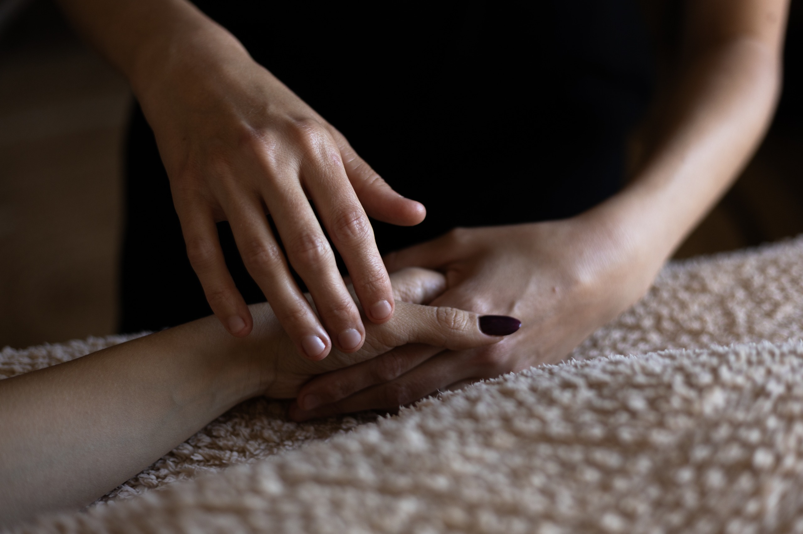

Le Toucher Métamorphique
Le toucher métamorphique est une technique douce et légère réalisée sur la tête, les mains et les pieds.
Par un toucher subtil, cette approche favorise le relâchement des tensions et invite à un profond moment de détente et d’introspection.
Le toucher métamorphique s’inscrit dans une approche symbolique autour des mémoires et des différentes étapes de notre construction, de la conception à la naissance. Il accompagne ainsi un processus de transformation intérieure, à l’image de la chenille qui se transforme peu à peu en papillon.
Un massage tout en douceur, qui laisse place au lâcher-prise et à l’écoute de soi.
Durée : 1 heure — 65 €
Je vous accueille les lundi, mardi, jeudi et vendredi entre 14h30 et 19h30. Le mercredi entre 9h et 19h30. Le samedi entre 9h et 12h.
Salon situé au 5, place de l'église - 57050 Longeville-les-Metz
Parking gratuit et facilement accessible.
Pour prendre rendez-vous, contactez moi au 06-87-60-53-46.
Règlement par carte bancaire, espèces, chèque ou virement bancaire.